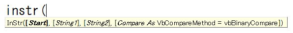

InStr関数

Instr関数は、VBAでは頻繁に使われる必須関数で、
シート関数のFIND関数と同様機能のVBA関数になります。
最初に見つかった文字位置を返す文字列処理関数で、
検索文字が見つからなかった場合は0を返します。
検索文字が見つかった時は、その文字位置の数値、
見つからなかった時は、0が戻り値となります。
しかっかりと使えるようになっておく必要があります。
検索の開始位置を表す数式を指定します。
省略すると、先頭の文字から検索されます。
引数 start に Null 値が含まれている場合、エラーが発生します。
引数 compare を指定した場合は、start も指定する必要があります。
検索対象となる文字列式を指定します。
引数string1内で検索する文字列式を指定します。
引数 compare を指定した場合は、start も指定する必要があります。
引数 compare を省略すると、バイナリ モードで比較が行われます。
引数compareを指定した場合は、引数startも指定する必要があります。
設定する値については、次の「設定値」を参照してください。
| 定数 | 値 | 説明 |
使用できません |
-1 | Option Compare ステートメントの設定を使用して比較を行います。 |
| vbBinaryCompare | 0 | バイナリ モードで比較を行います。 |
| vbTextCompare | 1 | テキスト モードで比較を行います。 |
※バイナリ モードでは、全角半角、大文字小文字が区別されます。
テキストモードでは、全角半角、大文字小文字が区別されません。
従って、InStr関数使用時も、大文字小文字を区別されるバイナリ モードを使う事が多くなります。
大文字小文字を区別せずに判定したい場合は、
LCase関数
※注意
指定するとコンパイルエラーになります。
戻り値（返り値）
最初に見つかった文字位置(先頭からその位置までの文字数)を返します。
InStrB関数
検索結果をバイト位置 (先頭からその位置までのバイト数) で返します。
使用例．
InStr("エクセルExcel", "ce") ・・・ 7
InStr(6, "エクセルexcel", "e")・・・ 8、6文字以降で検索するので、2番目のeの位置
応用例1．
「（」の前までを取り出す場合です。
Dim i As Long
For i = 1 To Cells(Rows.Count, 1).End(xlUp).Row
If InStr(Cells(i, 1), "（") > 0 Then
Cells(i, 2) = Left(Cells(i, 1), InStr(Cells(i, 1), "（") - 1)
End If
Next
InStr関数で、「（」があるかどうかを判定してから、
「（」がある場合には、その前までを取り出してB列に入れています。
応用例2．
「株式会社」という名称が含まれていたら、B列に「株式会社」と出力する。
Dim i As Long
For i = 1 To Cells(Rows.Count, 1).End(xlUp).Row
If InStr(Cells(i, 1), "株式会社") > 0 Then
Cells(i, 2) = "株式会社"
End If
Next
よく使われる使い方になります。
ただし、この場合は、Like演算子を使って、
If Cells(i, 1) Like "*株式会社*" Then
このように書いても同じです。
実際には、InStr関数とLike演算子は、好みによって使い分けられている場合が多いようです。
応用例3．
以下のように関数をネストさせます。
Dim str As String
str = "ExcelＥｘｃｅｌ"
MsgBox InStr(str, "ｅ") '結果は9
MsgBox InStr(StrConv(LCase(str), vbNarrow), StrConv(LCase("ｅ"),
vbNarrow)) '結果は1
検索対象、検索文字、双方を、
・LCase関数で、小文字変換
・StrConv関数で、半角変換
これにより、全角半角、大文字小文字が区別せずに検索されます。
練習問題
関連関数
InStrRev関数は、
文字列の中から指定した文字列を最後の文字位置から検索を開始し、
最初に見つかった先頭からの文字位置を返す文字列処理関数です。
文字列系関数の参考ページ
文字列操作に関するVBA関数の一覧の掲載と、
Replace関数、InStr関数、StrConv関数について詳細に解説しています。
※VBA関数一覧
同じテーマ「VBA関数」の記事
Chr関数,ChrB関数,ChrW関数
Format関数
FormatCurrency関数,FormatDateTime関数,FormatNumber関数,FormatPercent関数
InStr関数
InStrRev関数
LCase関数
Left関数,LeftB関数
Len関数,LenB関数
LTrim関数
Mid関数,MidB関数
Replace関数
新着記事NEW ・・・新着記事一覧を見る
VBA100本ノック 100本目：WEBから100本ノックのリストを取得｜VBA練習問題（3月3日）
VBA100本ノック 99本目：自動席替え（行列と前後左右が全て違うように）｜VBA練習問題（3月2日）
VBA100本ノック 98本目：席替えルールが守られているか確認｜VBA練習問題（3月1日）
VBA100本ノック 97本目：Accessデータを取得（グループ集計）｜VBA練習問題（2月27日）
VBA100本ノック 96本目：Accessデータを取得（マスタ結合&抽出）｜VBA練習問題（2月26日）
VBA100本ノック 95本目：図形のテキストを検索するフォーム作成｜VBA練習問題（2月24日）
VBA100本ノック 94本目：表範囲からHTMLのtableタグを作成｜VBA練習問題（2月23日）
VBA100本ノック 93本目：複数ブックを連結して再分割｜VBA練習問題（2月22日）
VBA100本ノック 92本目：セルの色を16進で返す関数｜VBA練習問題（2月20日）
VBA100本ノック 91本目：時間計算（残業時間の月間合計）｜VBA練習問題（2月19日）
アクセスランキング ・・・ ランキング一覧を見る
1.最終行の取得（End,Rows.Count）｜VBA入門
2.RangeとCellsの使い方｜VBA入門
3.変数宣言のDimとデータ型｜VBA入門
4.マクロって何？VBAって何？｜VBA入門
5.Range以外の指定方法（Cells,Rows,Columns）｜VBA入門
6.セルのコピー&値の貼り付け（PasteSpecial）｜VBA入門
7.繰り返し処理（For Next)｜VBA入門
8.セルに文字を入れるとは（Range,Value）｜VBA入門
9.マクロはどこに書くの（VBEの起動）｜VBA入門
10.とにかく書いてみよう（Sub,End Sub）｜VBA入門
このサイトがお役に立ちましたら「シェア」「Bookmark」をお願いいたします。
記述には細心の注意をしたつもりですが、
間違いやご指摘がありましたら、「お問い合わせ」からお知らせいただけると幸いです。
掲載のVBAコードは動作を保証するものではなく、あくまでVBA学習のサンプルとして掲載しています。
掲載のVBAコードは自己責任でご使用ください。万一データ破損等の損害が発生しても責任は負いません。